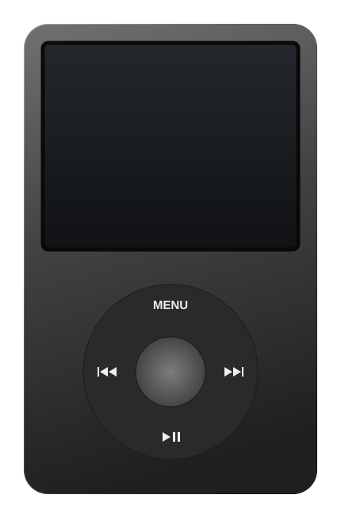
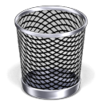

SOFTWARE PROJECTS
My work
No projects found. Try another search.
Subject: Projects and opportunities


Even the discarded ideas
have a place.
Software projects and experiments.
Make yourself at home.
A familiar desktop, your way.
Desktop background
Preferences and your note are saved only on this device.
BMaiaOS
Bernardo Maia’s portfolio
Back to a time when we created things just for the fun of it.
Independent portfolio. Not affiliated with Apple.